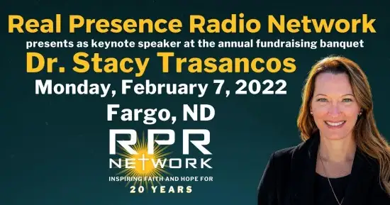
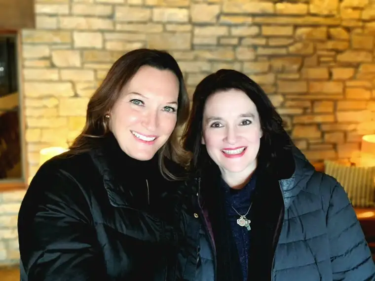

As soon as I heard the guest speaker for our Catholic radio network’s 2022 fundraising banquet would be Dr. Stacy Trasancos, I let out a quiet squeal.

I first heard Dr. Trasancos speak on Catholic radio in 2016 when her book, “Particles of Faith,” was just coming out. It was on a morning talk show, and I distinctly recall my location on the school drop-off route as I heard her describe the essence of her faith conversion, and how it had converged with her plunge into science: “Science is the study of the handiwork of God.”
I had been in conversations with, or heard talks from, enough non-religious scientists who blatantly discounted the possibility of science and faith being compatible, and it deeply frustrated me. But here was this scientist explaining it in the simplest, but most profound way. She had turned the whole conversation on its head in an instant by shifting the perspective to its true base.
As soon as I got home, I wrote down the quote and shared it on Facebook. I also connected with Dr. Trasancos through Facebook. There, I’ve been able to keep up with some of her work, along with her updates on family life. I’ve also appreciated her guest appearances on “Catholic Answers” radio show, hearing her well-informed but heartfelt explanations of the convergence of faith and science.
So, the squeal was pure, and I sent her a message to let her know I was excited to hear from her in February. “I’m looking forward to coming to Fargo,” she wrote back. “Would you want to do lunch?”
And so it was that I had the blessed opportunity to bring Dr. Trasancos, now simply “Stacy,” with me to Mass and then, to lunch here in Fargo on Feb. 6, the day before her keynote talk.

Before picking her up at her hotel that morning, however, I’ll admit to a measure of intimidation. Despite my love of mixing up concoctions as a child, and appreciation of the natural world, I somehow missed taking chemistry class in high school. Could I hold up my end of a conversation ? Maybe her study of theology could bridge the gap, I thought.
In the end, the worry was unnecessary. The hours I had the privilege of spending time with this delightful sister in Christ ended up being about two main things: worship of God, and the heart-merging of two Catholic communicators, mothers and wives. It was simple and fulfilling, a gift from God I will long treasure.
After her keynote Monday night, I told Stacy I might write about something she shared in our discourse; a practical motto that deserves light. The phrase came from a book by psychologist Lisa Damour, “Under Pressure: Confronting the Epidemic of Stress and Anxiety in Girls.” And this is it: “Let the glitter settle.”
I shared this concept with a seasoned mother the night of the radio banquet. I didn’t have to say much before she exclaimed, “Oh, that’s great! I am going to have to tell my daughter, who is now raising pre-teens.” With little explanation, she knew exactly what the phrase meant.
Those in the middle of raising teen daughters likely know what the motto refers to, but if not, here it is. It points to the hormones and rollercoaster of emotions inherent in the life of a girl becoming a woman. That drama is the glitter. And when the glitter hits the fan and is flying all over the place, it’s best to let the glitter settle before jumping in. Hopefully that makes sense. Whether you’re raising teen daughters now, you’ve likely been one, or observed one, at some point.
I find it a beautiful way to describe, and respond to, the reality of raising teen girls. I only wish I would have heard it back in 2016, when our two daughters were still at home. They are now 21 and 24. We have less glitter floating about our home now, but every once in a while, some sparks of it return. So, even though I’m late in coming to this phrase, I love it, and am sure to apply it at some point.
To me, “Let the glitter settle” is a way of looking at something that is hard, and often unsettling, in a new and respectful light. It also recognizes the beauty of it all. Yes, raising teens is a messy business, but even in this, we can’t forget that glitter reflects light.
Somewhere in the midst of that glitter, we find our child, struggling through life. I remember my own days of glitter. It was hard! I don’t know exactly how I made it through, but I did. And maybe it’s because my own mother let the glitter settle a bit before she jumped in.
It’s not always easy. As humans, we may feel like we want to swoop into the drama to try to settle it ourselves. We do have a part to play, but it might not be what we think. My advice to younger mothers, now that I’m able to see in clearer light, is, when the glitter begins to fly, try to pause, pray, and decide whether God wants you to jump in now, or give it some time. God can handle the glitter; we likely can’t.
There’s no perfect response to glitter that is gliding down, often in frenzied fashion, but looking at the drama involved in raising teen girls with this sparkly visual in mind can, I hope, help.
Q4U: Do you let the glitter get to you? Might this visual help you let it settle first?